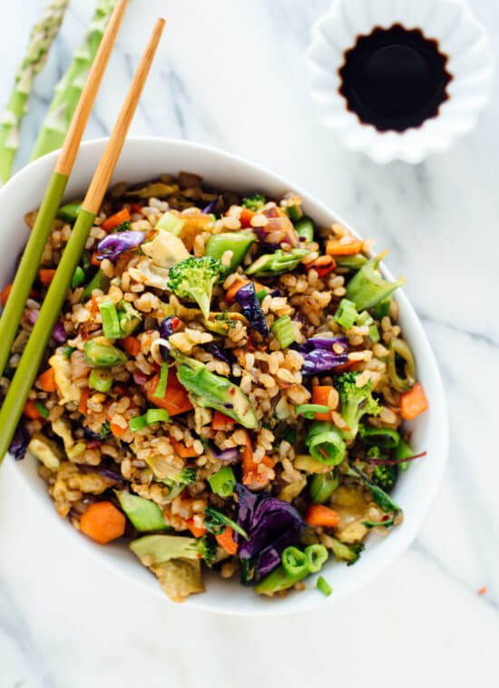

Home
Asian Style Veggie Rice

Description
Fast and easy preparation with no animal products. It will take around 30 to 40 minutes
to prepare, we will use three base vegetables and mushrooms but you can change them or
add more if you like.
Ingredients
- Cooking Oil: seven tablespoons
- Garlic: three cloves
- Onion: half of an small piece
- Rice: two cups
- Salt: two tablespoons
- Water
- Soy sauce
- Mushrooms: 200g
- Carrots: 100g
- Peas: 100g
- Broccoli: 100g
Preparation
- Prepare the rice as explained here
- Slice all vegetables in small pieces (strips or squares)
- Heat the vegetables in water until it boils
- Fry the mushrooms in a large pan with a small amount of cooking oil
- Add to the same pan the vegetables along with soy sauce
- Stir for a while and then add the rice
Enjoy!
Back